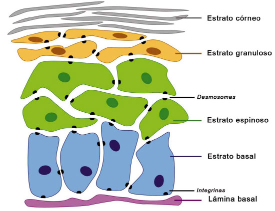
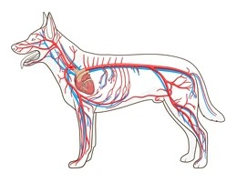
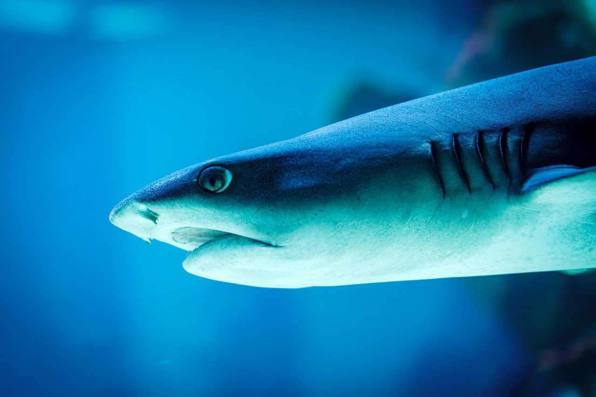
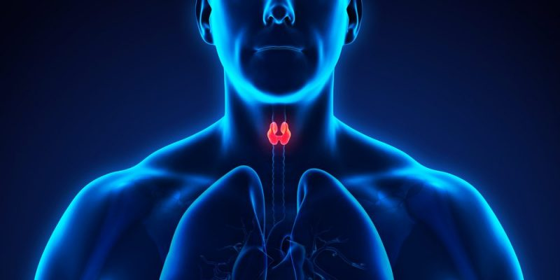
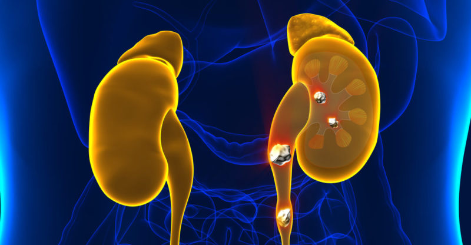
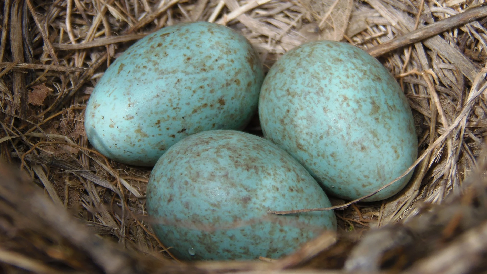

¿Qué son los vertebrados?
.jpg)
Los animales vertebrados son aquellos que poseen una columna vertebral o espina dorsal, la cual les proporciona soporte y protección para su médula espinal.
Pertenecen al filo Chordata y se caracterizan por tener un esqueleto interno óseo o cartilaginoso, el cual les permite mayor movilidad y desarrollo en comparación con los invertebrados.
Los vertebrados son fundamentales en los ecosistemas, ya que desempeñan distintos roles como depredadores, presas, polinizadores y reguladores de poblaciones.
Además, han evolucionado y se han adaptado a diversos hábitats, desde los océanos hasta el aire y la tierra.
En la sociedad humana, muchos vertebrados han sido domesticados para la alimentación, el transporte y la compañía. Su estudio es clave en la biología, la medicina y la conservación ambiental.
Origen de los Vertebrados
Se clasifican:
Los vertebrados surgieron hace aproximadamente 530 millones de años, durante la explosión del Cámbrico. Se cree que evolucionaron a partir de un grupo de organismos marinos primitivos llamados cordados, que ya presentaban una notocorda, una estructura flexible que servía como soporte y que más tarde dio origen a la columna vertebral.
Ancestros de los vertebrados
Los vertebrados provienen de los cordados, un filo de animales caracterizados por poseer, en algún momento de su desarrollo: Una notocorda, precursora de la columna vertebral. Un tubo neural dorsal, que evolucionó en el sistema nervioso central. Hendiduras branquiales, presentes en embriones de todos los vertebrados. Una cola postanal en algún punto del desarrollo.
Uno de los grupos más cercanos a los primeros vertebrados son los urocordados (tunicados) y los cefalocordados (anfioxos), animales marinos sin esqueleto óseo, pero con características que se asemejan a las de los vertebrados primitivos.
Primeros vertebrados
Los primeros vertebrados conocidos fueron peces sin mandíbulas, similares a las actuales lampreas y mixinos. Estos peces primitivos tenían un esqueleto cartilaginoso y carecían de mandíbulas, pero ya mostraban estructuras clave como un cráneo y un sistema nervioso más complejo. Durante el Período Ordovícico (hace unos 450 millones de años), surgieron los ostracodermos, los primeros vertebrados con placas óseas externas, lo que marcó la aparición de la mineralización en los esqueletos. Luego, en el Devónico (hace 400 millones de años), aparecieron los primeros peces con mandíbulas, como los placodermos y los tiburones primitivos.
Evolución hacia los vertebrados terrestres Los vertebrados acuáticos dieron origen a los anfibios primitivos en el período Devónico-Triásico, cuando algunos peces con aletas lobuladas (sarcopterigios) comenzaron a adaptarse a la vida en tierra firme. Este fue el paso crucial hacia la evolución de los reptiles, aves y mamíferos, que dominarían los ecosistemas terrestres en los millones de años siguientes.Evolución Temprana de los Vertebrados:
- Primeros Cordados (Precámbrico - Cámbrico).
- Aparición de los Vertebrados Primarios (Cámbrico - Ordovícico, hace 500-480 millones de años).
- Evolución de los Peces Mandibulados (Silúrico - Devónico, hace 440-360 millones de años).
- Colonización de la Tierra por los Vertebrados (Devónico - Carbonífero, hace 360-300 millones de años).
- Diversificación de Reptiles, Aves y Mamíferos (Pérmico - Mesozoico, hace 250-65 millones de años).
- Expansión de los Mamíferos (Cenozoico, hace 65 millones de años - actualidad).
Los animales vertebrados se clasifican en cinco grandes grupos, basados en sus características anatómicas y fisiológicas.
-
Peces (Pisces):
Los peces son animales vertebrados primariamente acuáticos, generalmente ectotérmicos y con respiración por branquias. Suelen estar recubiertos por escamas, y están dotados de aletas, que permiten su movimiento continuo en los medios acuáticos, y branquias, con las que captan el oxígeno disuelto en el agua.
Anfibios (Amphibia):
Los anfibios son una clase de animales vertebrados anamniotas, tetrápodos, ectotérmicos, con respiración branquial durante la fase larvaria y pulmonar al alcanzar el estado adulto. Reptiles (Reptilia):
Son una clase de animales vertebrados amniotas provistos de escamas epidérmicas de queratina. Pertenece a la taxonomía tradicional, pero de acuerdo con la sistemática cladística actual, es un grupo parafilético, es decir, que no incluye a todos los descendientes del ancestro común.
Aves (Aves):
Aves es una clase de animales vertebrados homeotermos con los miembros anteriores transformados en alas, el cuerpo cubierto de plumas y un pico córneo sin dientes. Para reproducirse ponen huevos que incuban hasta su eclosión.
Mamíferos (Mammalia):
Los mamíferos son una clase de animales vertebrados amniotas homeotermos que poseen glándulas mamarias productoras de leche con las que alimentan a las crías. Esta es su característica principal, de la que derivan su nombre de mamíferos. La gran mayoría de este grupo son vivíparos.
A diferencia del resto de vertebrados, se distinguen por sufrir una transformación durante su desarrollo.
Anatomía
Tegumento
El tegumento adquiere notable importancia en los vertebrados por los múltiples papeles que desempeña, y puede presentar variadas diferenciaciones córneas. En el tegumento se distinguen formaciones de estructuras protectoras y sensoriales, glándulas con funciones excretoras, aislamiento del medio, etc. Consta de tres capas: epidermis, dermis e hipodermis. Por su parte, la coloración del tegumento es debida sobre todo a los cromatóforos o células pigmentarias ramificadas de la piel.
La piel origina dos formaciones importantes, epidérmicas y dérmicas:
Formaciones epidérmicas: Son glándulas llamadas faneras que dependiendo del tipo de sustancia elaborada puede ser venenosa, por ejemplo, en muchos peces, anfibios y reptiles; y sebáceas, sudoríparas y mamarias en los mamíferos. Las faneras consisten en tejidos o apéndices córneos de la piel, tales como las de los reptiles, aves y mamíferos; garras y uñas; plumas y picos de las aves; pelos, crines y pezuñas de determinados mamíferos, y también determinados cuernos de mamíferos, como los de los antílopes, etc. Formaciones dérmicas: Ejemplo de las escamas de los peces; placas óseas de los caparazones de determinados reptiles (quelonios) y las durísimas escamas de la piel de los cocodrilos; los cuernos de los rumiantes, etc.
Aparato locomotor
El aparato locomotor de los vertebrados está compuesto por huesos, músculos, articulaciones, ligamentos y tejidos conectivos. Su función principal es permitir el movimiento y mantener la estructura del cuerpo. Huesos Forman la base rígida del cuerpo, Son sostenidos por ligamentos y articulaciones.
El aparato locomotor de los vertebrados se ha adaptado de su función inicial (la natación), a otras acciones múltiples que permiten movimientos complejos según las condiciones registradas por los órganos sensitivos.
Los peces, habitantes del medio primigenio, sufrieron cambios evolutivos importantes a partir de la aparición de las aletas pares, que posteriormente se convirtieron en quiridios o extremidades locomotoras pentadáctilas (de cinco dedos)
cuando comenzaron la conquista del medio terrestre, y que sufrirían posteriormente adaptaciones específicas, tales como las manos prensoras de los primates, las manos desgarradoras de los felinos, o las alas de sustentación aérea de las aves.
Aparato circulatorio
En los vertebrados el aparato circulatorio es cerrado, mediante el cual se transporta oxígeno y nutrientes a los distintos tejidos y células (presentan glóbulos rojos que transportan el oxígeno mediante la hemoglobina).
Consta de un sistema sanguíneo y sistema linfático.
Está dotado de un corazón dividido en cámaras, arterias, arteriolas, venas, vénulas y capilares.
En los peces hay un circuito sistémico y otro branquial. En muchos vertebrados terrestres el sistema sanguíneo es doble (circulación mayor o general, y circulación menor o pulmonar), es decir no se mezclan la sangre arterial y venosa. El corazón de los peces presenta dos cámaras, una aurícula y un ventrículo (dos aurículas y un ventrículo en los anfibios y reptiles). En las aves y mamíferos es tetracameral (dos aurículas y dos ventrículos), y con una serie de válvulas cardíacas. En los vertebrados existe además un sistema linfático, encargado de recoger el líquido intersticial.
Aparato respiratorio
El aparato respiratorio de los vertebrados es branquial en los animales acuáticos (ciclóstomos, peces y larvas de anfibios), y pulmonar en los terrestres, parte de los acuáticos y también los anfibios que tienen dos tipos de respiración: la pulmonar y a través de la piel.
Las branquias son un órgano o apéndice filiforme (en forma de laminillas vascularizadas), externa o interna según se disponga en el cuerpo. Tienen una función respiratoria, y están especializadas para el intercambio gaseoso en el medio acuático. Todas las branquias presentan en común una amplia superficie de contacto con el medio, y en ellas la irrigación sanguínea se encuentra mucho más desarrollada que en otras partes del cuerpo. En las aves, el aparato respiratorio es sumamente eficaz; proporciona el oxígeno necesario para generar la energía que el cuerpo demanda por el esfuerzo desarrollado durante el vuelo. Consta de un sistema de bronquios que están conectados a unos sacos aéreos; los pulmones están divididos en alvéolos y lobulillos.
Sistema nervioso
El sistema nervioso de los vertebrados comprende el sistema nervioso central, que a su vez consta de encéfalo y médula espinal; y el sistema nervioso periférico, que consta de numerosos ganglios y nervios (raquídeos o espinales); existe además un sistema nervioso autónomo que inerva las vísceras (sistema simpático y parasimpático). Los órganos sensitivos, así como las funciones motoras, son muy perfeccionados y desarrollados. Los nervios raquídeos se ramifican a diferentes niveles de la médula, e inervan los distintos músculos, glándulas y órganos. En el caso de los tetrápodos, aparecen dos engrosamientos en la médula, las intumescencias cervicales y lumbar, como consecuencia del desarrollo de las patas.
Los sentidos incluyen:
- Ojos, dispuestos en cámara de visión lateral, salvo en algunas aves y mamíferos primates, que es binocular.
- Tangorreceptores, que incluyen los órganos táctiles de los mamíferos y la línea lateral (captadoras de ondas de presión) de los ciclóstomos, peces y algunos anfibios acuáticos.
- Órganos auditivos, en los tetrápodos consta de oído interno y oído medio, ventanas oval y redonda, membrana timpánica y huesecillos, los cuales transmiten la vibración del tímpano a la cóclea o caracol. El oído medio comunica con la faringe a través de la trompa de Eustaquio; los mamíferos disponen además de un oído externo. En los peces solo hay oído interno.
Sistema endocrino
El sistema endocrino de los vertebrados está muy perfeccionado; mediante las hormonas regula múltiples funciones del organismo. Está controlado por el hipotálamo y la hipófisis, que mediante la elaboración de mensajes bioquímicos ejercen su acción sobre las gónadas, páncreas, glándulas suprarrenales, etc.
Aparato excretor
El aparato excretor de los vertebrados está formado por el aparato renal y las glándulas sudoríparas. Está muy perfeccionado en comparación con los cordados inferiores. Mediante estructuras especializadas se consigue filtrar los líquidos internos al margen del medio externo, a la vez que mantiene en equilibrio el nivel de todos ellos dentro del cuerpo.
Reproducción
Reproducción en vertebrados
La reproducción de los vertebrados es sexual salvo excepciones (ejemplo de algunos peces con casos de hermafroditismo), esto ocurre habitualmente mediante sexos separados, con fecundación interna o externa, y tanto vivíparos como ovíparos. Los mamíferos presentan la mayor complejidad, en los cuales el embrión se desarrolla en el interior de la madre recibiendo el alimento a través de la placenta en los mamíferos placentarios y del marsupio en los mamíferos marsupiales. Después de nacidas las crías la administración del alimento se efectúa mediante la leche segregada por las glándulas mamarias.
Los vertebrados tienen diferentes estrategias reproductivas para garantizar la supervivencia de su especie. Se pueden clasificar según el tipo de fecundación, el desarrollo del embrión y los cuidados parentales que brindan a sus crías.
_-_Torres_del_Paine_National_Park_25.jpg)
Tipos de reproducción:
- Según el tipo de fecundación: Fecundación externa: La unión del espermatozoide y el óvulo ocurre fuera del cuerpo, generalmente en el agua.
- Según el tipo de desarrollo embrionario: Ovíparos: Los embriones se desarrollan dentro de huevos depositados en el medio externo.
- Según el cuidado parental: Ausente o mínimo: En muchos peces, anfibios y reptiles, los padres no cuidan a las crías después del nacimiento.
Ejemplo: peces y anfibios.
Fecundación interna: El macho introduce los espermatozoides en el cuerpo de la hembra para fecundar el óvulo.Ejemplo: reptiles, aves y mamíferos.
Ejemplo: aves, la mayoría de los reptiles y anfibios.
Ovovivíparos: Los embriones crecen dentro de huevos retenidos en el cuerpo de la madre hasta la eclosión.Ejemplo: algunos tiburones y serpientes.
Vivíparos: El embrión se desarrolla dentro del cuerpo de la madre, que le proporciona nutrientes a través de la placenta.Ejemplo: mamíferos.
Parcial: Algunas especies de aves y reptiles protegen sus huevos hasta la eclosión.
Intenso: Los mamíferos y aves alimentan, protegen y enseñan a sus crías por períodos prolongados.
Ejemplos de reproducción:
Peces:
Generalmente ovíparos, con fecundación externa. Algunas especies, como los tiburones, pueden ser ovovivíparos o vivíparos.Anfibios:
Ovíparos, con fecundación externa en la mayoría de los casos. Sus larvas pasan por metamorfosis.Reptiles:
La mayoría son ovíparos con fecundación interna. Algunos son ovovivíparos.Aves:
Ovíparos con fecundación interna. Construyen nidos y cuidan sus huevos hasta la eclosiónMamíferos:
Principalmente vivíparos, con fecundación interna y cuidado parental prolongado.
